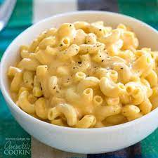

Slow Cooker Mac and Cheese

Description
This creamy mac and cheese recipe only takes moments to make in a slow cooker. It's simple to make, and great for large family gatherings and potluck dinners.
Ingredients
- 1 (16 ounce) package elbow macaroni
- 1/2 cup butter
- salt and ground black pepper to taste
- 1 (16 ounce) package shredded Cheddar cheese, divided
- 1 (5 ounce) can evaporated milk
- 2 eggs, well beaten
- 2 cups whole milk
- 1 (10.5 ounce) can condensed Cheddar cheese soup (such as Campbell's)
- 1 pinch paprika, or as desired (Optional)